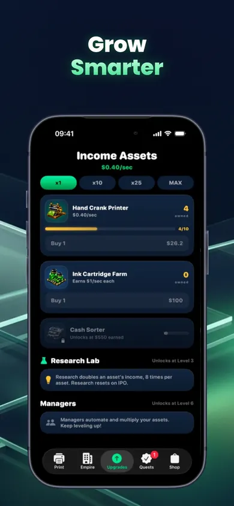

The mint bottleneck shift
Three machines work on every fictional ticket. Spend the shift’s limited upgrade tokens on the machines that will get more finished tickets out the door.
How to read the line
Every ticket passes through Press, Cut and Pack, in that order. Assume each station runs steadily, supplies are unlimited and its buffer has work ready. Steady output per minute is the smallest station rate. For example, a 4 → 9 → 12 line finishes four tickets per minute. A faster last station alone cannot change that.
Show this shift’s solution
Choose your next printer upgrade
Play Cash Empire Clicker on iPhoneThis browser shift uses invented rates. In the iPhone game, the “Best next” card compares what an upgrade costs, how much fictional income it adds and how long it takes to pay back.
Free to download and play. Optional one-time purchases can extend offline earnings and add permanent in-game multipliers.
See the game’s Income Assets screen

Useful for someone else?
Share the public guide. Your entries and results are not included.
Open the public guide link